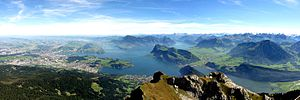

Switzerland, officially the Swiss Confederation, is a landlocked country located at the confluence of Western, Central and Southern Europe.[f][15] The country is a federal republic composed of 26 cantons, with federal authorities based in Bern.[a][3][2] Switzerland is bordered by Italy to the south, France to the west, Germany to the north and Austria and Liechtenstein to the east. It is geographically divided among the Swiss Plateau, the Alps and the Jura, spanning a total area of 41,285 km2 (15,940 sq mi) and land area of 39,997 km2 (15,443 sq mi). Although the Alps occupy the greater part of the territory, the Swiss population of approximately 8.7 million is concentrated mostly on the plateau, where the largest cities and economic centres are located, among them Zürich, Geneva and Basel. These three cities are home to several offices of international organisations such as the WTO, the WHO, the ILO, the headquarters of FIFA, the UN's second-largest office, as well as the main office of the Bank for International Settlements. The main international airports of Switzerland are also located in these cities
The establishment of the Old Swiss Confederacy in the Late Middle Ages resulted from a series of military successes against Austria and Burgundy. The Federal Charter of 1291 is considered the founding document of Switzerland, which is celebrated on Swiss National Day. Since the Reformation of the 16th century, Switzerland has maintained a firm policy of armed neutrality. Swiss independence from the Holy Roman Empire was formally recognised in the Peace of Westphalia in 1648. Switzerland has not fought an international war since 1815 and did not join the United Nations until 2002. Nevertheless, it pursues an active foreign policy. It is frequently involved in peace-building processes worldwide.[16] Switzerland is the birthplace of the Red Cross, one of the world's oldest and best known humanitarian organisations. It is a founding member of the European Free Trade Association, but notably not part of the European Union, the European Economic Area or the Eurozone. However, it participates in the Schengen Area and the European Single Market through bilateral treaties.
Switzerland occupies the crossroads of Germanic and Romance Europe, as reflected in its four main linguistic and cultural regions: German, French, Italian and Romansh. Although the majority of the population are German-speaking, Swiss national identity is rooted in a common historical background, shared values such as federalism and direct democracy,[17] as well as Alpine symbolism.[18][19] This identity stretching across languages, ethnic groups, and religions has led many to consider Switzerland a Willensnation ("nation of volition"), as opposed to a nation-state.
The English name Switzerland is a compound containing Switzer, an obsolete term for a Swiss person which was in use during the 16th to 19th centuries.[29] The English adjective Swiss is a loan from French Suisse, also in use since the 16th century. The name Switzer is from the Alemannic Schwiizer, in origin an inhabitant of Schwyz and its associated territory, one of the Waldstätte cantons which formed the nucleus of the Old Swiss Confederacy. The Swiss began to adopt the name for themselves after the Swabian War of 1499, used alongside the term for "Confederates", Eidgenossen (literally: comrades by oath), used since the 14th century. The data code for Switzerland, CH, is derived from Latin Confoederatio Helvetica (English: Helvetic Confederation).The English name Switzerland is a compound containing Switzer, an obsolete term for a Swiss person which was in use during the 16th to 19th centuries.[29] The English adjective Swiss is a loan from French Suisse, also in use since the 16th century. The name Switzer is from the Alemannic Schwiizer, in origin an inhabitant of Schwyz and its associated territory, one of the Waldstätte cantons which formed the nucleus of the Old Swiss Confederacy. The Swiss began to adopt the name for themselves after the Swabian War of 1499, used alongside the term for "Confederates", Eidgenossen (literally: comrades by oath), used since the 14th century. The data code for Switzerland, CH, is derived from Latin Confoederatio Helvetica (English: Helvetic Confederation).
The toponym Schwyz itself was first attested in 972, as Old High German Suittes, ultimately perhaps related to swedan ‘to burn’ (cf. Old Norse svíða ‘to singe, burn’), referring to the area of forest that was burned and cleared to build.[30] The name was extended to the area dominated by the canton, and after the Swabian War of 1499 gradually came to be used for the entire Confederation.[31][32] The Swiss German name of the country, Schwiiz, is homophonous to that of the canton and the settlement, but distinguished by the use of the definite article (d'Schwiiz for the Confederation,[33] but simply Schwyz for the canton and the town).[34] The long [iː] of Swiss German is historically and still often today spelled ⟨y⟩ rather than ⟨ii⟩, preserving the original identity of the two names even in writing.
Switzerland lies between latitudes 45° and 48° N, and longitudes 5° and 11° E. It contains three basic topographical areas: the Swiss Alps to the south, the Swiss Plateau or Central Plateau, and the Jura mountains on the west. The Alps are a high mountain range running across the central and south of the country, constituting about 60% of the country's total area. The majority of the Swiss population live in the Swiss Plateau. Among the high valleys of the Swiss Alps, many glaciers are found, totalling an area of 1,063 square kilometres (410 sq mi). From these originate the headwaters of several major rivers, such as the Rhine, Inn, Ticino and Rhône, which flow in the four cardinal directions into the whole of Europe. The hydrographic network includes several of the largest bodies of fresh water in Central and Western Europe, among which are included Lake Geneva (also called le Lac Léman in French), Lake Constance (known as Bodensee in German) and Lake Maggiore. Switzerland has more than 1500 lakes and contains 6% of Europe's freshwater stock. Lakes and glaciers cover about 6% of the national territory. The largest lake is Lake Geneva, in western Switzerland shared with France. The Rhône is both the main source and outflow of Lake Geneva. Lake Constance is the second-largest Swiss lake and, like Lake Geneva, an intermediate step by the Rhine at the border to Austria and Germany. While the Rhône flows into the Mediterranean Sea at the French Camargue region and the Rhine flows into the North Sea at Rotterdam in the Netherlands, about 1,000 kilometres (620 miles) apart, both springs are only about 22 kilometres (14 miles) apart from each other in the Swiss Alps.[67][70]
Forty-eight of Switzerland's mountains are 4,000 metres (13,000 ft) above sea in altitude or higher.[67] At 4,634 m (15,203 ft), Monte Rosa is the highest, although the Matterhorn (4,478 m or 14,692 ft) is often regarded as the most famous. Both are located within the Pennine Alps in the canton of Valais, on the border with Italy. The section of the Bernese Alps above the deep glacial Lauterbrunnen valley, containing 72 waterfalls, is well known for the Jungfrau (4,158 m or 13,642 ft) Eiger and Mönch, and the many picturesque valleys in the region. In the southeast the long Engadin Valley, encompassing the St. Moritz area in canton of Graubünden, is also well known; the highest peak in the neighbouring Bernina Alps is Piz Bernina (4,049 m or 13,284 ft).
Go to this website for your booking : Book now